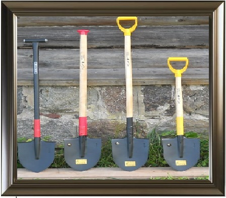
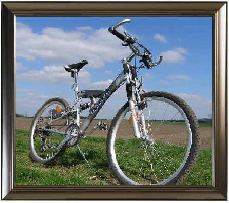

| Как я провел это ****** лето! |
 |
Мое лето прошло довольно скучно. Все лето я был занят самыми разными вещами и у меня,
практически, не было времени на отдых. |
|
Первый месяц своего лета я работал в колледже. Так прошла моя производственная практика.
Я помогал заместителю директора по учебной части. |
|
Потом, после трудового дня практики, а затем, и после практики, я занимался в автошколе.
Я проходил практические занятия с инструктором на автомобиле. |
 |
Происходило много интересного, и именно тогда я понял, что в Москве очень много дураков.
И они имеют свои автомобили. :) |
|  |
Когда мои практические занятия в автошколе закончились, мне пришлось уехать на дачу.
На ней я провел долгие две недели августа. Это были тяжелые недели.
Во время них приходилось много копать и работать по участку. |
 |
В последние 2 недели мне удалось хотя бы немного отдохнуть. |
|  |
Я по гулял со своими друзьями, отдохнул, по катался на велосипеде и затем,
кончились эти теплые летние дни, и пришла пора идти в колледж. |